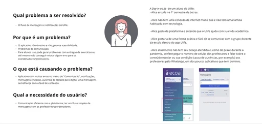
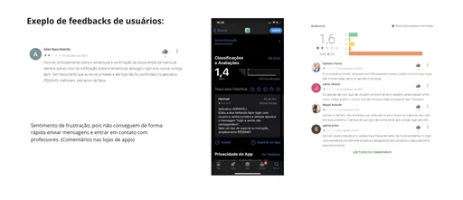
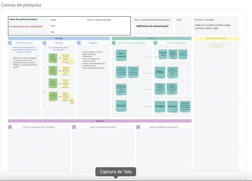
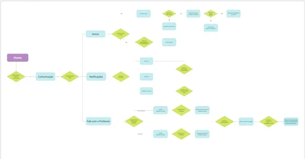
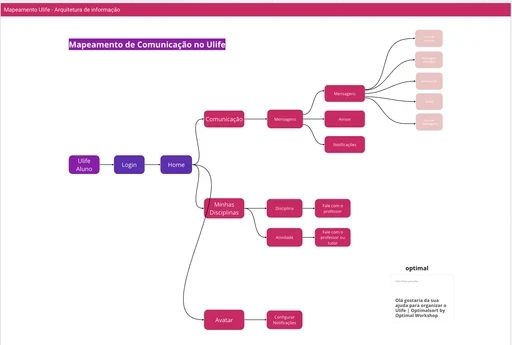
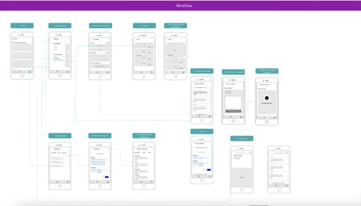
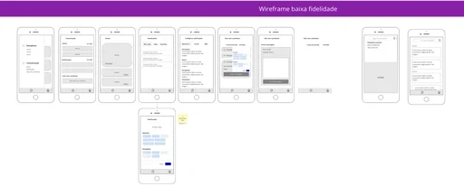

Education · Digital platform · Grupo Ânima
Ulife
A more cohesive student experience across academic services and digital learning.

One platform across many study journeys
Ulife serves more than 300,000 students across 18 Grupo Ânima institutions. It brings academic services and digital content together across courses, campuses, and online, hybrid and in person study formats.
Connect disconnected student services
Students faced disconnected tools, unclear navigation and limited personalization. At important moments such as enrollment and graduation, they had to move between services to figure out what to do next.
Research & usability results
Mapping needs across study formats
I led product design from discovery through delivery with product, academic operations and engineering. More than 1,200 survey responses, interviews with students and staff, analytics, heatmaps and stakeholder workshops helped us map recurring friction across study formats.
Selected screens
A more connected student experience.
Selected visuals from the original project.






A clearer, more connected student journey
The redesign brought services together in a modular dashboard with more personalized content and a simpler visual language. Testing with 18 students informed the notification system and made urgent tasks, such as deadlines, easier to spot. In usability testing, 89% completed tasks without guidance and the mobile experience received a 4.6/5 rating.
Back to homeNext case · Nonprofit · Accessibility